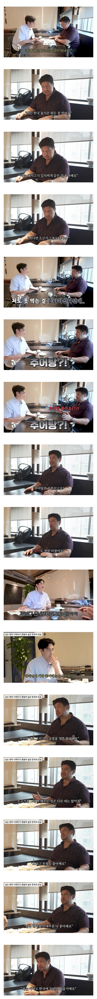

심슨 원작자가 좋아하는 한국 음식
댓글
경상도식 추어탕이 진국이지 한국가면 매번 먹는게 추어탕 냉면 국밥임
엥 맷 그로닝 나이 좀 있지 않아??
맷그로잉 아님. 멧그로잉은 총괄이고 디렉터 여러명일걸 심슨
어떤 역사서를 보면 한민족이 사실은 고대에 동서양을 아우르는 큰 영토를 지배했던적이 있다고 합니다.
물론 진지하게 받아들이면 안되는 사실이겠지만
그 역사서가 진짜라면
사실 전세계인들이 한국음식을 맛있어하는건
옛날 조상들의 입맛이 유전자에 각인되어있어서
그리운 맛을 먹었기 때문이 아닌가
그런 상상도 생각해봅니다
뭐? 진지하게 받아들이면 안 돼? 초고대문명 대환제국과 핀란드 간의 대전쟁이 랩틸리언의 간계로 공상 취급을 받게 되다니...!
공룡오적만 아니었어도...
이 미친놈들 ㅋㅋㅋㅋㅋㅋㅋㅋㅋㅋ

이자식 AI같아!!
추어탕 어짜피 다 갈아주는데 왜 못먹지
그것도 지역색이 있음. 크리미하다고 느껴질 정도로 갈아주는 곳이 있는가 하면 좀 고기 건더기가 보여야 한다는 곳도 있어서..
내 주변 추어탕은 먹으면 뼈 씹혀서 짜증나는데
다른데는 정말 곱게 갈아주나봐?
일단 대구 경상북도는 삶아서 뼈 걷어내고 고기까지 무조건 갈아서 나옴. 첨에 통으로 들러간 서울식 추어탕 받고 멘붕 왔었단 ㅋ 그래도 지금은 잘먹음 ㅋ
그럼 죽이랑 다른 게 뭘까...
난 아직도 무슨 맛인지 모르겠다
제대로 씹히는건 우거지정도…???
식감이 문제가 아니라 흙냄새+비린내 때문에 안먹음
통추어탕도있음ㅋㅋ
예전에는 민물생선 및 추어탕 싫어 했는데 어죽, 어국수 먹은 이후에는 추어탕 먹게 됫는데 어국수가 더 맛있는거 같아
https://youtu.be/S1LuhEphmEk
이런느낌일까 ㅋㅋㅋ
한국 애니회사가 심슨 외주 계속 했어서 여러 번 와봤을걸
하청때문에 한국에 자주 왔을려나
소고기 스튜는 뭐지 갈비탕인가?
30회..? 지리네
근데 진짜 저 30회라는 게 외국인인 거 생각하면 대단한 거 맞지? 1년 12개월
원작자 아님
아트 디렉터임
심슨 원작자는 맷 그레이닝
70세 넘었음